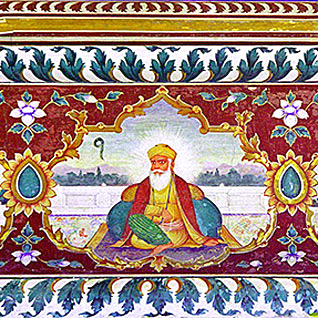

Sri Guru Nanak Dev Ji was the creator of Sikhism, and the first of the ten Sikh Guru's. The last Guru said that there would be no more Gurus after him and Sikhs would be taught by the Sikh holy book, which is called Guru Granth Sahib Ji. The word "Guru" means "teacher" in many Indian languages.
Beside followers of Sikhism, Guru Nanak Dev is considered holy by Punjabi Hindus and Sahajdhari Sindhis across the Indian subcontinent. Because of his close connection with Hazrat Sheikh Farid-ud-din Ganj Shakar, the Punjabi Sufi saint, Nanak Dev is also considered by many Muslims to be a Sufi, or adherent of Sufic tenets.
| DOB | Place of birth | Wife name | childeren | Parents |
|---|---|---|---|---|
| 15 April 1469 | Rāi Bhoi Kī Talvaṇḍī, Delhi Sultanate (Present day Nankana Sahib, Punjab, Pakistan) | Mehta Kalu and Mata Tripta | Sri Chand, Lakhmi Das | Mehta Kalu and Mata Tripta |